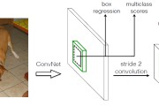

目标检测|YOLOv2原理与实现(附YOLOv3)
码字不易，欢迎给个赞！
欢迎交流与转载，文章会同步发布在公众号：机器学习算法全栈工程师(Jeemy110)
前期文章：
小白将：目标检测|YOLO原理与实现小白将：目标检测|SSD原理与实现小白将：综述|基于深度学习的目标检测(一)前言
在前面的一篇文章中，我们详细介绍了YOLOv1的原理以及实现过程。这篇文章接着介绍YOLOv2的原理以及实现，YOLOv2的论文全名为YOLO9000: Better, Faster, Stronger，它斩获了CVPR 2017 Best Paper Honorable Mention。在这篇文章中，作者首先在YOLOv1的基础上提出了改进的YOLOv2，然后提出了一种检测与分类联合训练方法，使用这种联合训练方法在COCO检测数据集和ImageNet分类数据集上训练出了YOLO9000模型，其可以检测超过9000多类物体。所以，这篇文章其实包含两个模型：YOLOv2和YOLO9000，不过后者是在前者基础上提出的，两者模型主体结构是一致的。YOLOv2相比YOLOv1做了很多方面的改进，这也使得YOLOv2的mAP有显著的提升，并且YOLOv2的速度依然很快，保持着自己作为one-stage方法的优势，YOLOv2和Faster R-CNN, SSD等模型的对比如图1所示。这里将首先介绍YOLOv2的改进策略，并给出YOLOv2的TensorFlow实现过程，然后介绍YOLO9000的训练方法。近期，YOLOv3也放出来了，YOLOv3也在YOLOv2的基础上做了一部分改进，我们在最后也会简单谈谈YOLOv3所做的改进工作。

YOLOv2的改进策略
YOLOv1虽然检测速度很快，但是在检测精度上却不如R-CNN系检测方法，YOLOv1在物体定位方面（localization）不够准确，并且召回率（recall）较低。YOLOv2共提出了几种改进策略来提升YOLO模型的定位准确度和召回率，从而提高mAP，YOLOv2在改进中遵循一个原则：保持检测速度，这也是YOLO模型的一大优势。YOLOv2的改进策略如图2所示，可以看出，大部分的改进方法都可以比较显著提升模型的mAP。下面详细介绍各个改进策略。

Batch Normalization
Batch Normalization可以提升模型收敛速度，而且可以起到一定正则化效果，降低模型的过拟合。在YOLOv2中，每个卷积层后面都添加了Batch Normalization层，并且不再使用droput。使用Batch Normalization后，YOLOv2的mAP提升了2.4%。
High Resolution Classifier
目前大部分的检测模型都会在先在ImageNet分类数据集上预训练模型的主体部分（CNN特征提取器），由于历史原因，ImageNet分类模型基本采用大小为 的图片作为输入，分辨率相对较低，不利于检测模型。所以YOLOv1在采用
分类模型预训练后，将分辨率增加至
，并使用这个高分辨率在检测数据集上finetune。但是直接切换分辨率，检测模型可能难以快速适应高分辨率。所以YOLOv2增加了在ImageNet数据集上使用
输入来finetune分类网络这一中间过程（10 epochs），这可以使得模型在检测数据集上finetune之前已经适用高分辨率输入。使用高分辨率分类器后，YOLOv2的mAP提升了约4%。
Convolutional With Anchor Boxes
在YOLOv1中，输入图片最终被划分为 网格，每个单元格预测2个边界框。YOLOv1最后采用的是全连接层直接对边界框进行预测，其中边界框的宽与高是相对整张图片大小的，而由于各个图片中存在不同尺度和长宽比（scales and ratios）的物体，YOLOv1在训练过程中学习适应不同物体的形状是比较困难的，这也导致YOLOv1在精确定位方面表现较差。YOLOv2借鉴了Faster R-CNN中RPN网络的先验框（anchor boxes，prior boxes，SSD也采用了先验框）策略。RPN对CNN特征提取器得到的特征图（feature map）进行卷积来预测每个位置的边界框以及置信度（是否含有物体），并且各个位置设置不同尺度和比例的先验框，所以RPN预测的是边界框相对于先验框的offsets值（其实是transform值，详细见Faster R_CNN论文），采用先验框使得模型更容易学习。所以YOLOv2移除了YOLOv1中的全连接层而采用了卷积和anchor boxes来预测边界框。为了使检测所用的特征图分辨率更高，移除其中的一个pool层。在检测模型中，YOLOv2不是采用
图片作为输入，而是采用
大小。因为YOLOv2模型下采样的总步长为
，对于
大小的图片，最终得到的特征图大小为
，维度是奇数，这样特征图恰好只有一个中心位置。对于一些大物体，它们中心点往往落入图片中心位置，此时使用特征图的一个中心点去预测这些物体的边界框相对容易些。所以在YOLOv2设计中要保证最终的特征图有奇数个位置。对于YOLOv1，每个cell都预测2个boxes，每个boxes包含5个值：
，前4个值是边界框位置与大小，最后一个值是置信度（confidence scores，包含两部分：含有物体的概率以及预测框与ground truth的IOU）。但是每个cell只预测一套分类概率值（class predictions，其实是置信度下的条件概率值）,供2个boxes共享。YOLOv2使用了anchor boxes之后，每个位置的各个anchor box都单独预测一套分类概率值，这和SSD比较类似（但SSD没有预测置信度，而是把background作为一个类别来处理）。
使用anchor boxes之后，YOLOv2的mAP有稍微下降（这里下降的原因，我猜想是YOLOv2虽然使用了anchor boxes，但是依然采用YOLOv1的训练方法）。YOLOv1只能预测98个边界框（ ），而YOLOv2使用anchor boxes之后可以预测上千个边界框（
）。所以使用anchor boxes之后，YOLOv2的召回率大大提升，由原来的81%升至88%。
Dimension Clusters
在Faster R-CNN和SSD中，先验框的维度（长和宽）都是手动设定的，带有一定的主观性。如果选取的先验框维度比较合适，那么模型更容易学习，从而做出更好的预测。因此，YOLOv2采用k-means聚类方法对训练集中的边界框做了聚类分析。因为设置先验框的主要目的是为了使得预测框与ground truth的IOU更好，所以聚类分析时选用box与聚类中心box之间的IOU值作为距离指标：
图3为在VOC和COCO数据集上的聚类分析结果，随着聚类中心数目的增加，平均IOU值（各个边界框与聚类中心的IOU的平均值）是增加的，但是综合考虑模型复杂度和召回率，作者最终选取5个聚类中心作为先验框，其相对于图片的大小如右边图所示。对于两个数据集，5个先验框的width和height如下所示（来源：YOLO源码的cfg文件）：
COCO: (0.57273, 0.677385), (1.87446, 2.06253), (3.33843, 5.47434), (7.88282, 3.52778), (9.77052, 9.16828)
VOC: (1.3221, 1.73145), (3.19275, 4.00944), (5.05587, 8.09892), (9.47112, 4.84053), (11.2364, 10.0071)
但是这里先验框的大小具体指什么作者并没有说明，但肯定不是像素点，从代码实现上看，应该是相对于预测的特征图大小（ ）。对比两个数据集，也可以看到COCO数据集上的物体相对小点。这个策略作者并没有单独做实验，但是作者对比了采用聚类分析得到的先验框与手动设置的先验框在平均IOU上的差异，发现前者的平均IOU值更高，因此模型更容易训练学习。

New Network: Darknet-19
YOLOv2采用了一个新的基础模型（特征提取器），称为Darknet-19，包括19个卷积层和5个maxpooling层，如图4所示。Darknet-19与VGG16模型设计原则是一致的，主要采用 卷积，采用
的maxpooling层之后，特征图维度降低2倍，而同时将特征图的channles增加两倍。与NIN(Network in Network)类似，Darknet-19最终采用global avgpooling做预测，并且在
卷积之间使用
卷积来压缩特征图channles以降低模型计算量和参数。Darknet-19每个卷积层后面同样使用了batch norm层以加快收敛速度，降低模型过拟合。在ImageNet分类数据集上，Darknet-19的top-1准确度为72.9%，top-5准确度为91.2%，但是模型参数相对小一些。使用Darknet-19之后，YOLOv2的mAP值没有显著提升，但是计算量却可以减少约33%。

_files/v2-6b500d1b8bc35c53191daa65eb49f56f_hd.jpg)
Direct location prediction
前面讲到，YOLOv2借鉴RPN网络使用anchor boxes来预测边界框相对先验框的offsets。边界框的实际中心位置 ，需要根据预测的坐标偏移值
，先验框的尺度
以及中心坐标
（特征图每个位置的中心点）来计算：
但是上面的公式是无约束的，预测的边界框很容易向任何方向偏移，如当 时边界框将向右偏移先验框的一个宽度大小，而当
时边界框将向左偏移先验框的一个宽度大小，因此每个位置预测的边界框可以落在图片任何位置，这导致模型的不稳定性，在训练时需要很长时间来预测出正确的offsets。所以，YOLOv2弃用了这种预测方式，而是沿用YOLOv1的方法，就是预测边界框中心点相对于对应cell左上角位置的相对偏移值，为了将边界框中心点约束在当前cell中，使用sigmoid函数处理偏移值，这样预测的偏移值在(0,1)范围内（每个cell的尺度看做1）。总结来看，根据边界框预测的4个offsets
，可以按如下公式计算出边界框实际位置和大小：
其中 为cell的左上角坐标，如图5所示，在计算时每个cell的尺度为1，所以当前cell的左上角坐标为
。由于sigmoid函数的处理，边界框的中心位置会约束在当前cell内部，防止偏移过多。而
和
是先验框的宽度与长度，前面说过它们的值也是相对于特征图大小的，在特征图中每个cell的长和宽均为1。这里记特征图的大小为
（在文中是
)，这样我们可以将边界框相对于整张图片的位置和大小计算出来（4个值均在0和1之间）：
如果再将上面的4个值分别乘以图片的宽度和长度（像素点值）就可以得到边界框的最终位置和大小了。这就是YOLOv2边界框的整个解码过程。约束了边界框的位置预测值使得模型更容易稳定训练，结合聚类分析得到先验框与这种预测方法，YOLOv2的mAP值提升了约5%。

_files/v2-7fee941c2e347efc2a3b19702a4acd8e_hd.jpg)
Fine-Grained Features
YOLOv2的输入图片大小为 ，经过5次maxpooling之后得到
大小的特征图，并以此特征图采用卷积做预测。
大小的特征图对检测大物体是足够了，但是对于小物体还需要更精细的特征图（Fine-Grained Features）。因此SSD使用了多尺度的特征图来分别检测不同大小的物体，前面更精细的特征图可以用来预测小物体。YOLOv2提出了一种passthrough层来利用更精细的特征图。YOLOv2所利用的Fine-Grained Features是
大小的特征图（最后一个maxpooling层的输入），对于Darknet-19模型来说就是大小为
的特征图。passthrough层与ResNet网络的shortcut类似，以前面更高分辨率的特征图为输入，然后将其连接到后面的低分辨率特征图上。前面的特征图维度是后面的特征图的2倍，passthrough层抽取前面层的每个
的局部区域，然后将其转化为channel维度，对于
的特征图，经passthrough层处理之后就变成了
的新特征图（特征图大小降低4倍，而channles增加4倍，图6为一个实例），这样就可以与后面的
特征图连接在一起形成
大小的特征图，然后在此特征图基础上卷积做预测。在YOLO的C源码中，passthrough层称为reorg layer。在TensorFlow中，可以使用tf.extract_image_patches或者tf.space_to_depth来实现passthrough层：
out = tf.extract_image_patches(in, [1, stride, stride, 1], [1, stride, stride, 1], [1,1,1,1], padding="VALID")
// or use tf.space_to_depth
out = tf.space_to_depth(in, 2)

_files/v2-c94c787a81c1216d8963f7c173c6f086_hd.jpg)
另外，作者在后期的实现中借鉴了ResNet网络，不是直接对高分辨特征图处理，而是增加了一个中间卷积层，先采用64个 卷积核进行卷积，然后再进行passthrough处理，这样
的特征图得到
的特征图。这算是实现上的一个小细节。使用Fine-Grained Features之后YOLOv2的性能有1%的提升。
Multi-Scale Training
由于YOLOv2模型中只有卷积层和池化层，所以YOLOv2的输入可以不限于 大小的图片。为了增强模型的鲁棒性，YOLOv2采用了多尺度输入训练策略，具体来说就是在训练过程中每间隔一定的iterations之后改变模型的输入图片大小。由于YOLOv2的下采样总步长为32，输入图片大小选择一系列为32倍数的值：
，输入图片最小为
，此时对应的特征图大小为
（不是奇数了，确实有点尴尬），而输入图片最大为
，对应的特征图大小为
。在训练过程，每隔10个iterations随机选择一种输入图片大小，然后只需要修改对最后检测层的处理就可以重新训练。

_files/v2-3c72c10c00c9268091d8c93f908d90ed_hd.jpg)
采用Multi-Scale Training策略，YOLOv2可以适应不同大小的图片，并且预测出很好的结果。在测试时，YOLOv2可以采用不同大小的图片作为输入，在VOC 2007数据集上的效果如下图所示。可以看到采用较小分辨率时，YOLOv2的mAP值略低，但是速度更快，而采用高分辨输入时，mAP值更高，但是速度略有下降，对于 ，mAP高达78.6%。注意，这只是测试时输入图片大小不同，而实际上用的是同一个模型（采用Multi-Scale Training训练）。

_files/v2-71f001caa2968d5fb9196250d80f7b82_hd.jpg)
总结来看，虽然YOLOv2做了很多改进，但是大部分都是借鉴其它论文的一些技巧，如Faster R-CNN的anchor boxes，YOLOv2采用anchor boxes和卷积做预测，这基本上与SSD模型（单尺度特征图的SSD）非常类似了，而且SSD也是借鉴了Faster R-CNN的RPN网络。从某种意义上来说，YOLOv2和SSD这两个one-stage模型与RPN网络本质上无异，只不过RPN不做类别的预测，只是简单地区分物体与背景。在two-stage方法中，RPN起到的作用是给出region proposals，其实就是作出粗糙的检测，所以另外增加了一个stage，即采用R-CNN网络来进一步提升检测的准确度（包括给出类别预测）。而对于one-stage方法，它们想要一步到位，直接采用“RPN”网络作出精确的预测，要因此要在网络设计上做很多的tricks。YOLOv2的一大创新是采用Multi-Scale Training策略，这样同一个模型其实就可以适应多种大小的图片了。
YOLOv2的训练
YOLOv2的训练主要包括三个阶段。第一阶段就是先在ImageNet分类数据集上预训练Darknet-19，此时模型输入为 ，共训练160个epochs。然后第二阶段将网络的输入调整为
，继续在ImageNet数据集上finetune分类模型，训练10个epochs，此时分类模型的top-1准确度为76.5%，而top-5准确度为93.3%。第三个阶段就是修改Darknet-19分类模型为检测模型，并在检测数据集上继续finetune网络。网络修改包括（网路结构可视化）：移除最后一个卷积层、global avgpooling层以及softmax层，并且新增了三个
卷积层，同时增加了一个passthrough层，最后使用
卷积层输出预测结果，输出的channels数为：
，和训练采用的数据集有关系。由于anchors数为5，对于VOC数据集输出的channels数就是125，而对于COCO数据集则为425。这里以VOC数据集为例，最终的预测矩阵为
（shape为
），可以先将其reshape为
，其中
为边界框的位置和大小
，
为边界框的置信度，而
为类别预测值。


_files/v2-b23fdd08f65266f7af640c1d3d00c05f_hd.jpg)
YOLOv2的网络结构以及训练参数我们都知道了，但是貌似少了点东西。仔细一想，原来作者并没有给出YOLOv2的训练过程的两个最重要方面，即先验框匹配（样本选择）以及训练的损失函数，难怪Ng说YOLO论文很难懂，没有这两方面的说明我们确实不知道YOLOv2到底是怎么训练起来的。不过默认按照YOLOv1的处理方式也是可以处理，我看了YOLO在TensorFlow上的实现darkflow（见yolov2/train.py），发现它就是如此处理的：和YOLOv1一样，对于训练图片中的ground truth，若其中心点落在某个cell内，那么该cell内的5个先验框所对应的边界框负责预测它，具体是哪个边界框预测它，需要在训练中确定，即由那个与ground truth的IOU最大的边界框预测它，而剩余的4个边界框不与该ground truth匹配。YOLOv2同样需要假定每个cell至多含有一个grounth truth，而在实际上基本不会出现多于1个的情况。与ground truth匹配的先验框计算坐标误差、置信度误差（此时target为1）以及分类误差，而其它的边界框只计算置信度误差（此时target为0）。YOLOv2和YOLOv1的损失函数一样，为均方差函数。
但是我看了YOLOv2的源码（训练样本处理与loss计算都包含在文件region_layer.c中，YOLO源码没有任何注释，反正我看了是直摇头），并且参考国外的blog以及allanzelener/YAD2K（Ng深度学习教程所参考的那个Keras实现）上的实现，发现YOLOv2的处理比原来的v1版本更加复杂。先给出loss计算公式：

_files/v2-58f1eec5594de9e887f22ac590b33062_hd.jpg)
我们来一点点解释，首先 分别指的是特征图（
）的宽与高，而
指的是先验框数目（这里是5），各个
值是各个loss部分的权重系数。第一项loss是计算background的置信度误差，但是哪些预测框来预测背景呢，需要先计算各个预测框和所有ground truth的IOU值，并且取最大值Max_IOU，如果该值小于一定的阈值（YOLOv2使用的是0.6），那么这个预测框就标记为background，需要计算noobj的置信度误差。第二项是计算先验框与预测宽的坐标误差，但是只在前12800个iterations间计算，我觉得这项应该是在训练前期使预测框快速学习到先验框的形状。第三大项计算与某个ground truth匹配的预测框各部分loss值，包括坐标误差、置信度误差以及分类误差。先说一下匹配原则，对于某个ground truth，首先要确定其中心点要落在哪个cell上，然后计算这个cell的5个先验框与ground truth的IOU值（YOLOv2中bias_match=1），计算IOU值时不考虑坐标，只考虑形状，所以先将先验框与ground truth的中心点都偏移到同一位置（原点），然后计算出对应的IOU值，IOU值最大的那个先验框与ground truth匹配，对应的预测框用来预测这个ground truth。在计算obj置信度时，在YOLOv1中target=1，而YOLOv2增加了一个控制参数rescore，当其为1时，target取预测框与ground truth的真实IOU值。对于那些没有与ground truth匹配的先验框（与预测框对应），除去那些Max_IOU低于阈值的，其它的就全部忽略，不计算任何误差。这点在YOLOv3论文中也有相关说明：YOLO中一个ground truth只会与一个先验框匹配（IOU值最好的），对于那些IOU值超过一定阈值的先验框，其预测结果就忽略了。这和SSD与RPN网络的处理方式有很大不同，因为它们可以将一个ground truth分配给多个先验框。尽管YOLOv2和YOLOv1计算loss处理上有不同，但都是采用均方差来计算loss。另外需要注意的一点是，在计算boxes的
和
误差时，YOLOv1中采用的是平方根以降低boxes的大小对误差的影响，而YOLOv2是直接计算，但是根据ground truth的大小对权重系数进行修正：l.coord_scale * (2 - truth.w*truth.h)（这里w和h都归一化到(0,1))，这样对于尺度较小的boxes其权重系数会更大一些，可以放大误差，起到和YOLOv1计算平方根相似的效果（参考YOLO v2 损失函数源码分析）。
// box误差函数，计算梯度
float delta_region_box(box truth, float *x, float *biases, int n, int index, int i, int j, int w, int h, float *delta, float scale, int stride)
{
box pred = get_region_box(x, biases, n, index, i, j, w, h, stride);
float iou = box_iou(pred, truth);
// 计算ground truth的offsets值
float tx = (truth.x*w - i);
float ty = (truth.y*h - j);
float tw = log(truth.w*w / biases[2*n]);
float th = log(truth.h*h / biases[2*n + 1]);
delta[index + 0*stride] = scale * (tx - x[index + 0*stride]);
delta[index + 1*stride] = scale * (ty - x[index + 1*stride]);
delta[index + 2*stride] = scale * (tw - x[index + 2*stride]);
delta[index + 3*stride] = scale * (th - x[index + 3*stride]);
return iou;
}
最终的YOLOv2模型在速度上比YOLOv1还快（采用了计算量更少的Darknet-19模型），而且模型的准确度比YOLOv1有显著提升，详情见paper。
YOLOv2在TensorFlow上实现
这里参考YOLOv2在Keras上的复现（见yhcc/yolo2）,使用TensorFlow实现YOLOv2在COCO数据集上的test过程。首先是定义YOLOv2的主体网络结构Darknet-19：
def darknet(images, n_last_channels=425):
"""Darknet19 for YOLOv2"""
net = conv2d(images, 32, 3, 1, name="conv1")
net = maxpool(net, name="pool1")
net = conv2d(net, 64, 3, 1, name="conv2")
net = maxpool(net, name="pool2")
net = conv2d(net, 128, 3, 1, name="conv3_1")
net = conv2d(net, 64, 1, name="conv3_2")
net = conv2d(net, 128, 3, 1, name="conv3_3")
net = maxpool(net, name="pool3")
net = conv2d(net, 256, 3, 1, name="conv4_1")
net = conv2d(net, 128, 1, name="conv4_2")
net = conv2d(net, 256, 3, 1, name="conv4_3")
net = maxpool(net, name="pool4")
net = conv2d(net, 512, 3, 1, name="conv5_1")
net = conv2d(net, 256, 1, name="conv5_2")
net = conv2d(net, 512, 3, 1, name="conv5_3")
net = conv2d(net, 256, 1, name="conv5_4")
net = conv2d(net, 512, 3, 1, name="conv5_5")
shortcut = net
net = maxpool(net, name="pool5")
net = conv2d(net, 1024, 3, 1, name="conv6_1")
net = conv2d(net, 512, 1, name="conv6_2")
net = conv2d(net, 1024, 3, 1, name="conv6_3")
net = conv2d(net, 512, 1, name="conv6_4")
net = conv2d(net, 1024, 3, 1, name="conv6_5")
# ---------
net = conv2d(net, 1024, 3, 1, name="conv7_1")
net = conv2d(net, 1024, 3, 1, name="conv7_2")
# shortcut
shortcut = conv2d(shortcut, 64, 1, name="conv_shortcut")
shortcut = reorg(shortcut, 2)
net = tf.concat([shortcut, net], axis=-1)
net = conv2d(net, 1024, 3, 1, name="conv8")
# detection layer
net = conv2d(net, n_last_channels, 1, batch_normalize=0,
activation=None, use_bias=True, name="conv_dec")
return net
然后实现对Darknet-19模型输出的解码：
def decode(detection_feat, feat_sizes=(13, 13), num_classes=80,
anchors=None):
"""decode from the detection feature"""
H, W = feat_sizes
num_anchors = len(anchors)
detetion_results = tf.reshape(detection_feat, [-1, H * W, num_anchors,
num_classes + 5])
bbox_xy = tf.nn.sigmoid(detetion_results[:, :, :, 0:2])
bbox_wh = tf.exp(detetion_results[:, :, :, 2:4])
obj_probs = tf.nn.sigmoid(detetion_results[:, :, :, 4])
class_probs = tf.nn.softmax(detetion_results[:, :, :, 5:])
anchors = tf.constant(anchors, dtype=tf.float32)
height_ind = tf.range(H, dtype=tf.float32)
width_ind = tf.range(W, dtype=tf.float32)
x_offset, y_offset = tf.meshgrid(height_ind, width_ind)
x_offset = tf.reshape(x_offset, [1, -1, 1])
y_offset = tf.reshape(y_offset, [1, -1, 1])
# decode
bbox_x = (bbox_xy[:, :, :, 0] + x_offset) / W
bbox_y = (bbox_xy[:, :, :, 1] + y_offset) / H
bbox_w = bbox_wh[:, :, :, 0] * anchors[:, 0] / W * 0.5
bbox_h = bbox_wh[:, :, :, 1] * anchors[:, 1] / H * 0.5
bboxes = tf.stack([bbox_x - bbox_w, bbox_y - bbox_h,
bbox_x + bbox_w, bbox_y + bbox_h], axis=3)
return bboxes, obj_probs, class_probs
我将YOLOv2的官方训练权重文件转换了TensorFlow的checkpoint文件（下载链接），具体的测试demo都放在我的GitHub上了，感兴趣的可以去下载测试一下，至于train的实现就自己折腾吧，相对会棘手点。

YOLO9000
YOLO9000是在YOLOv2的基础上提出的一种可以检测超过9000个类别的模型，其主要贡献点在于提出了一种分类和检测的联合训练策略。众多周知，检测数据集的标注要比分类数据集打标签繁琐的多，所以ImageNet分类数据集比VOC等检测数据集高出几个数量级。在YOLO中，边界框的预测其实并不依赖于物体的标签，所以YOLO可以实现在分类和检测数据集上的联合训练。对于检测数据集，可以用来学习预测物体的边界框、置信度以及为物体分类，而对于分类数据集可以仅用来学习分类，但是其可以大大扩充模型所能检测的物体种类。
作者选择在COCO和ImageNet数据集上进行联合训练，但是遇到的第一问题是两者的类别并不是完全互斥的，比如"Norfolk terrier"明显属于"dog"，所以作者提出了一种层级分类方法（Hierarchical classification），主要思路是根据各个类别之间的从属关系（根据WordNet）建立一种树结构WordTree，结合COCO和ImageNet建立的WordTree如下图所示：

_files/v2-bda21cf48f8127c48fede60d81c4d97e_hd.jpg)
WordTree中的根节点为"physical object"，每个节点的子节点都属于同一子类，可以对它们进行softmax处理。在给出某个类别的预测概率时，需要找到其所在的位置，遍历这个path，然后计算path上各个节点的概率之积。

在训练时，如果是检测样本，按照YOLOv2的loss计算误差，而对于分类样本，只计算分类误差。在预测时，YOLOv2给出的置信度就是 ，同时会给出边界框位置以及一个树状概率图。在这个概率图中找到概率最高的路径，当达到某一个阈值时停止，就用当前节点表示预测的类别。
通过联合训练策略，YOLO9000可以快速检测出超过9000个类别的物体，总体mAP值为19,7%。我觉得这是作者在这篇论文作出的最大的贡献，因为YOLOv2的改进策略亮点并不是很突出，但是YOLO9000算是开创之举。
YOLOv3
近期，YOLOv3发布了，但是正如作者所说，这仅仅是他们近一年的一个工作报告（TECH REPORT），不算是一个完整的paper，因为他们实际上是把其它论文的一些工作在YOLO上尝试了一下。相比YOLOv2，我觉得YOLOv3最大的变化包括两点：使用残差模型和采用FPN架构。YOLOv3的特征提取器是一个残差模型，因为包含53个卷积层，所以称为Darknet-53，从网络结构上看，相比Darknet-19网络使用了残差单元，所以可以构建得更深。另外一个点是采用FPN架构（Feature Pyramid Networks for Object Detection）来实现多尺度检测。YOLOv3采用了3个尺度的特征图（当输入为 时）：
，
，
，VOC数据集上的YOLOv3网络结构如图15所示，其中红色部分为各个尺度特征图的检测结果。YOLOv3每个位置使用3个先验框，所以使用k-means得到9个先验框，并将其划分到3个尺度特征图上，尺度更大的特征图使用更小的先验框，和SSD类似。


YOLOv3与其它检测模型的对比如下图所示，可以看到在速度上YOLOv3完胜其它方法，虽然AP值并不是最好的（如果比较AP-0.5，YOLOv3优势更明显）。

小结
从YOLO的三代变革中可以看到，在目标检测领域比较好的策略包含：设置先验框，采用全卷积做预测，采用残差网络，采用多尺度特征图做预测。期待未来有更好的策略出现。本人水平有限，文中难免出现错误，欢迎指正！
参考
- Darknet官网.
- thtrieu/darkflow.
- You Only Look Once: Unified, Real-Time Object Detection.
- YOLO9000: Better, Faster, Stronger.
- YOLOv3: An Incremental Improvement.
- yhcc/yolo2.
- pytorch-yolo2.
- Training Object Detection (YOLOv2) from scratch using Cyclic Learning Rates.
- allanzelener/YAD2K.
- marvis/pytorch-yolo3.
码字不易，欢迎给个赞！
欢迎交流与转载，文章会同步发布在公众号：机器学习算法全栈工程师(Jeemy110)
_files/v2-f44ff552a506dcc32d6f0f04c5be68e9_250x0.jpg)
59 条评论
Thanks for sharing~